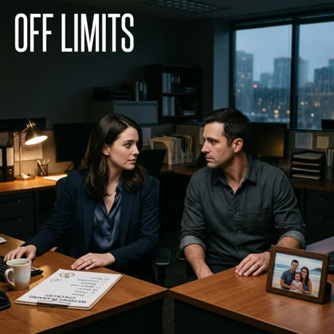

Vizcaya Sound · 2026-08-16
Off Limits
Lyrics
Coffee run, 9:00 AM, you're by the breakroom door
Dropped your pen, hit me with a smile I can't ignore
Sent a quick Slack asking 'bout my weekend plans
Now my heart's doing things that I don't understand
Got your desk two feet away from mine
And I'm fighting for my life just to toe the line
'Cause you're looking way too good today
And I hate how you know just what to say
Gotta put my noise-canceling on
Before my self-control is completely gone
So don't look at me like that, don't make it hard
I'm already taken, gotta keep up my guard
You're a ten out of ten, got the vibe, got the spark
Making casual banter feel dangerous in the dark
But I got someone waiting when the shift is done
Ain't gonna ruin real love for some temporary fun
Yeah, you're off limits, off limits—keeping my space
Gotta look away before I make a big mistake
Clock hits five, overtime, everyone is gone
Conference room dim with the city lights on
You asked if I was hungry, said you're ordering food
I can feel the room shifting to a whole different mood
Lockscreen lights up, see my girl right there
That's my reality check, yeah, I'm getting out of here
Yeah, you're looking way too good tonight
And this whole situation isn't right
I'm dodging every subtle vibe you throw
'Cause I already know where I need to go
So don't look at me like that, don't make it hard
I'm already taken, gotta keep up my guard
You're a ten out of ten, got the vibe, got the spark
Making casual banter feel dangerous in the dark
But I got someone waiting when the shift is done
Ain't gonna ruin real love for some temporary fun
Yeah, you're off limits, off limits—keeping my space
Gotta look away before I make a big mistake
I'm not gonna fumble what I built at home
Just for ten quick minutes when we're left alone
Crushes come and go, but loyalty is real
I don't care how tempting you're making this feel
Head down, pack my bag, eyes on the floor
I'm walking straight out of that office door
So don't look at me like that, don't make it hard
I'm already taken, gotta keep up my guard
You're a ten out of ten, got the vibe, got the spark
Making casual banter feel dangerous in the dark
But I got someone waiting when the shift is done
Ain't gonna ruin real love for some temporary fun
Yeah, you're off limits, off limits—keeping my space
Gotta look away before I make a big mistake
Badge tapped out, elevator down to the street
Call my girl: "Hey babe, what do you wanna eat?"
Yeah, heading straight home…
Right where I belong
(Off limits, yeah, off limits.)